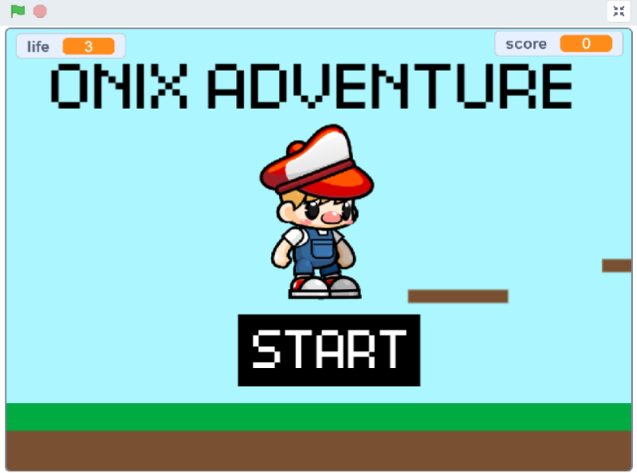
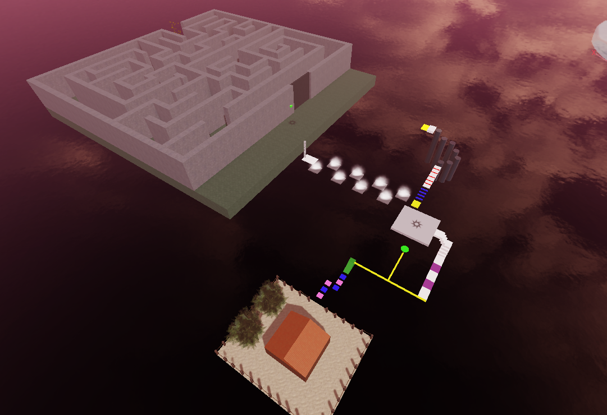

Hello, I'm
Farah Alya Putri Aprianto
Coding Educator
Coding Educator


Developed a dynamic 2D platformer game from scratch, focusing on core gameplay mechanics such as gravity physics, collision detection, and level progression. This project demonstrates my ability to design interactive user experiences and implement complex logical structures using block-based programming. Every aspect of the game, from movement mechanics to obstacle placement, was designed to provide a balanced and engaging challenge for players.

Designed and developed an immersive 3D experience within Roblox Studio, featuring a hybrid of a structured Obstacle Course (Obby) and a complex Maze environment. This project showcases my proficiency in spatial level design, environmental storytelling, and the implementation of 3D game mechanics. I focused on creating a balanced difficulty curve, guiding players through technical parkour challenges toward a final labyrinth objective. This work highlights my ability to transition from 2D logic to building interactive, multi-dimensional worlds.